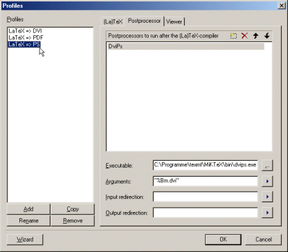

The tab 'Postprocessor' allows to define tools, which should be
run after the (La)TeX compiler, i.e. to convert the file generated by the
compiler to another format.

The meaning of the different controls:
- 'Postprocessors to run after the (La)TeX compiler'
- Lists all tools to run after the compiler has been executed. The tools
are listed in the order of the execution.
- Use the button New at the top of the list to add a new tool.
- Use the button Remove to remove the selected tool from the list.
- Use the buttons Up or Down to change the execution order.
- 'Executable'
- Specifies the full path of the currently selected tool's executable file.
- 'Arguments'
- Specifies the command line arguments to pass to the tool.
Use place holders for dynamic arguments.
- 'Input redirection'
- Specifies where the selected tool retrieves its input data from.
If nothing is specified here, the tool will retrieve its input data from
the standard input device (normally the keyboard). Otherwise it will
retrieve its input from the specified file.
Use place holders for dynamic arguments.
- 'Output redirection'
- Specifies where the selected tool should write its data output to.
If nothing is specified here, the tool will write its output to the
standard output device, which normally is the console, the tool has been
started from (i.e. a DOS box) or if TeXnicCenter started the tool the
output window.
Use place holders for dynamic arguments.
Using input and output redirection allow to use tools, which do not
interpret command line arguments, but retrieve their data input from the
tool's input device and/or write their data output to the tools output device.
An example of such a tool is "tth", which is used to convert LaTeX documents
into HTML documents. To start up tth use
tth < file.tex > file.html
When using this tool with TeXnicCenter, use "file.tex" as input and
"file.html" as output redirection. The command line of this tool has to
be empty.